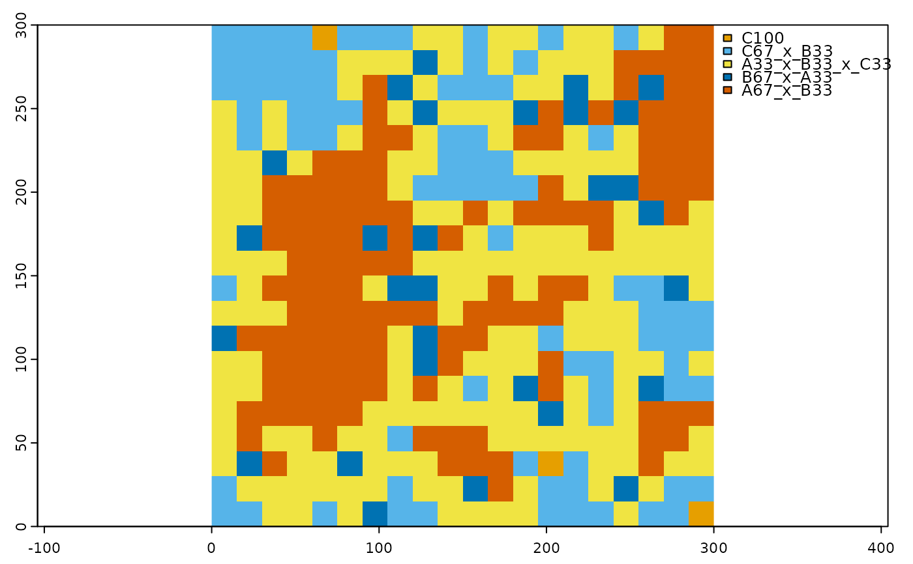
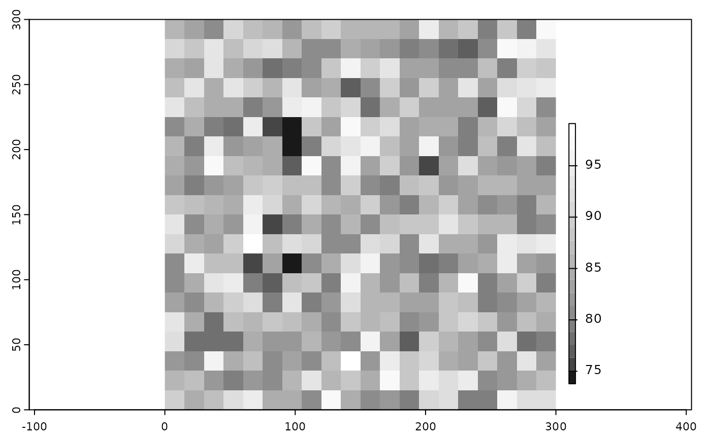

R/scaling_result_to_raster.R
scaling_result_to_raster.Rdconverts the scaling result of mdgp_scale() to spatial raster objects#'
scaling_result_to_raster(
scaling_result,
class_name_field,
proj_info = NA,
scale_factor
)data frame with scaling results generated by function mdgp_scale
field name that contains scaled class names
projection information of coordinates in the data frame to be converted to raster
ratio of lower (scaled) resolution to higher (original) raster resolution (resolution of lower resolution divided by resolution of higher resolution)
List with 3 objects. Two SpatRaster objects and a list with two objects.
The two scaled raster results are a categorical SpatRaster object with the scaled classified map and scaled class labels in the attribute table, and a numeric SpatRaster object with cell-level information retention. The second object contains a data frame with class-specific information retention and landscape-scale information retention.
relative_abundance_scaled_grid to generate relative abundance for each scaled grid cell,
mdgp_scale classifying relative abundance samples to multi-dimensional grid points.
# load categorical raster
r <- terra::rast(system.file("extdata/nlm_mid_geom_r3_sa0.tif", package = "landscapeScaling"))
# subset the raster to the lower 300 by 300 pixels
r_sub <- terra::crop(r,terra::ext(0,300,0,300))
# generate relative abundance for the scaled grid
rel_abund <- relative_abundance_scaled_grid(r_sub,class_field='cover',scale_factor=15)
head(rel_abund)
#> x y A B C
#> 1 0 0 4.8888889 38.22222 56.88889
#> 2 15 0 10.2222222 38.66667 51.11111
#> 3 30 0 20.0000000 42.66667 37.33333
#> 4 45 0 24.8888889 40.44444 34.66667
#> 5 60 0 0.8888889 28.00000 71.11111
#> 6 75 0 17.7777778 37.33333 44.88889
# classify relative abundance samples to multidimensional grid points
mdgp_result <- mdgp_scale(rel_abund,parts=3,rpr_threshold=10,monotypic_threshold=90)
#> [1] "number of cells: 400"
#> [1] "number of grid points: 10"
#> [1] "number of grid points remaining: 5"
head(mdgp_result)
#> cls A B C x_y prc_inf_agr class_name
#> 1 10 0.000 8.444 91.556 285_0 91.556 C100
#> 2 10 0.000 9.333 90.667 195_30 90.667 C100
#> 3 10 0.444 12.444 87.111 60_285 87.111 C100
#> 4 9 4.889 38.222 56.889 0_0 90.222 C67_x_B33
#> 5 9 10.222 38.667 51.111 15_0 84.444 C67_x_B33
#> 6 9 10.667 42.667 46.667 225_0 80.000 C67_x_B33
# rasterize the scaling result
scaled_map <- scaling_result_to_raster(mdgp_result,class_name_field='class_name',scale_factor=15)
print(scaled_map)
#> [[1]]
#> class : SpatRaster
#> dimensions : 20, 20, 1 (nrow, ncol, nlyr)
#> resolution : 15, 15 (x, y)
#> extent : 0, 300, 0, 300 (xmin, xmax, ymin, ymax)
#> coord. ref. :
#> source : memory
#> categories : class_name
#> name : class_name
#> min value : C100
#> max value : A67_x_B33
#>
#> [[2]]
#> class : SpatRaster
#> dimensions : 20, 20, 1 (nrow, ncol, nlyr)
#> resolution : 15, 15 (x, y)
#> extent : 0, 300, 0, 300 (xmin, xmax, ymin, ymax)
#> coord. ref. :
#> source : memory
#> name : prc_inf_agr
#> min value : 73.778
#> max value : 99.111
#>
#> [[3]]
#> [[3]][[1]]
#> class_name freq class_id prop inf_retention_mn inf_retention_sd
#> 1 A33_x_B33_x_C33 165 1 0.4125 84.129 3.814
#> 2 A67_x_B33 122 2 0.3050 87.417 6.519
#> 3 B67_x_A33 29 3 0.0725 82.038 2.214
#> 4 C100 3 4 0.0075 89.778 2.352
#> 5 C67_x_B33 81 5 0.2025 88.093 5.132
#>
#> [[3]][[2]]
#> mean sd
#> information_retention_landscape 85.826 5.356
#>
#>
# plot the scaled raster
# scaled color scheme for six lasses
clr_scale <- c('#E69F00','#56B4E9','#009E73','#F0E442','#0072B2','#D55E00')
terra::plot(scaled_map[[1]],col=clr_scale,mar=c(1.5,1.5,1,1))

# plot the information retention raster
terra::plot(scaled_map[[2]],plg=list(ext=c(310,315,20,220),loc = "right"),
col=gray.colors(20,start=0.1,end=1),mar=c(1.5,1.5,1,1))
